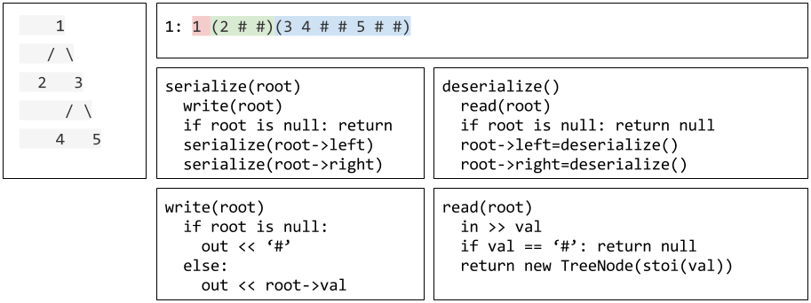
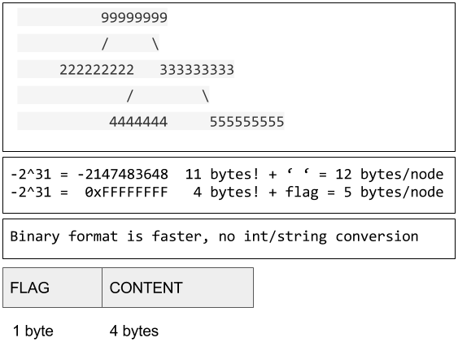

Task
Serialization is the process of converting a data structure or object into a sequence of bits so that it can be stored in a file or memory buffer, or transmitted across a network connection link to be reconstructed later in the same or another computer environment.
Design an algorithm to serialize and deserialize a binary tree. There is no restriction on how your serialization/deserialization algorithm should work. You just need to ensure that a binary tree can be serialized to a string and this string can be deserialized to the original tree structure.
Example
1
2
3
4
5
6
7
8
9
|
You may serialize the following tree:
1
/ \
2 3
/ \
4 5
as "[1,2,3,null,null,4,5]"
|
Clarification: The above format is the same as how LeetCode serializes a binary tree. You do not necessarily need to follow this format, so please be creative and come up with different approaches yourself.
Note: Do not use class member/global/static variables to store states. Your serialize and deserialize algorithms should be stateless.
Solution
- 只需按某种顺序遍历二叉树，并按照遍历的顺序存储节点的内容即可
- 注意对空节点的处理，即“不存在的左子节点”和“不存在的右子节点”都是空节点，需要用一个符号表示
- 注意拓扑结构，如何表示一个节点是另一个节点的左/右子节点
字符串存储
- encode时先序遍历二叉树，使用ostringstream打印每个节点的数值（转为字符串），并使用空格作为分隔，空节点用#表示
- decode时使用istringstream从字符串中读取，若是#则是空节点，否则将读到的字符串转换为数字，新建节点

- encode和decode时遍历的顺序必须一样，都是先序遍历
- 对空节点和子节点的处理：
- 用一个#表示空节点
- 默认每个非空节点都有左右子节点，只是一些为空
时间复杂度：遍历每个节点，O(n)空间复杂度：递归深度取决于树的高度O(h)
1
2
3
4
5
6
7
8
9
10
11
12
13
14
15
16
17
18
19
20
21
22
23
24
25
26
27
28
29
30
31
32
33
34
35
36
37
38
39
40
41
42
43
44
45
46
47
48
49
50
51
52
53
54
55
56
57
58
59
60
61
62
63
64
65
66
67
68
|
// Runtime: 76 ms, faster than 61.95% of C++ online submissions for Serialize and Deserialize Binary Tree.
// Memory Usage: 31.4 MB, less than 77.68% of C++ online submissions for Serialize and Deserialize Binary Tree.
/**
* Definition for a binary tree node.
* struct TreeNode {
* int val;
* TreeNode *left;
* TreeNode *right;
* TreeNode(int x) : val(x), left(NULL), right(NULL) {}
* };
*/
class Codec {
public:
// Encodes a tree to a single string.
string serialize(TreeNode* root) {
//使用字符串流，遍历树时生成字符串
ostringstream out;
//递归遍历树
encode(root,out);
//从字符串流中得到字符串
return out.str();
}
// Decodes your encoded data to tree.
TreeNode* deserialize(string data) {
//由字符串得到字符串流，便于处理分隔符
istringstream in(data);
//使用字符串递归地生成树
return decode(in);
}
private:
//递归遍历树，向字符串流中添加内容
void encode(TreeNode *root,ostringstream &out){
//空节点打印“# ”
if(!root)
out<<"# ";
//非空节点打印数值并继续遍历左右子树（前序遍历）
else{
out<<root->val<<" ";
encode(root->left,out);
encode(root->right,out);
}
return;
}
//从字符串流中递归地生成树
TreeNode *decode(istringstream &in){
//从字符串流中一次取一个节点的字符串
string content;
in>>content;
//空节点，返回空指针
if(content=="#")
return nullptr;
//非空节点，遍历并返回
else{
//生成节点
TreeNode *root= new TreeNode(stoi(content));
//遍历子树
root->left=decode(in);
root->right=decode(in);
return root;
}
}
};
// Your Codec object will be instantiated and called as such:
// Codec codec;
// codec.deserialize(codec.serialize(root));
|
二进制存储
- 每个节点分两部分：
- 标志status需要3个bit：是否为空节点、是否有左子节点、是否有右子节点
- 数值为节点数值的二进制表示
- 使用stream对象的
write和read方法，将二进制内容写入流或从流中读出二进制内容

- 使用二进制存储的优势：
- 速度更快，不需要进行数字和字符串的相互转换
- 节省空间，即同一棵树使用二进制序列化后比字符串序列化占的空间更小
- 例子：
- 字符串：-2^31=-2147483648，加上空格，一个节点占用12个byte
- 二进制：-2^31=0xFFFFFFFF，加上status表示节点的拓扑形态，一个节点占用5个byte
- 对空节点和子节点的处理：
- 使用标志位NOT_NULL表示节点是否为空
- 使用标志位HAS_LEFT和HAS_RIGHT表示节点是否有左右子节点
时间复杂度：遍历每个节点，O(n)空间复杂度：递归深度取决于树的高度O(h)
1
2
3
4
5
6
7
8
9
10
11
12
13
14
15
16
17
18
19
20
21
22
23
24
25
26
27
28
29
30
31
32
33
34
35
36
37
38
39
40
41
42
43
44
45
46
47
48
49
50
51
52
53
54
55
56
57
58
59
60
61
62
63
64
65
66
67
68
69
|
// Runtime: 52 ms, faster than 97.25% of C++ online submissions for Serialize and Deserialize Binary Tree.
// Memory Usage: 31.8 MB, less than 68.81% of C++ online submissions for Serialize and Deserialize Binary Tree.
/**
* Definition for a binary tree node.
* struct TreeNode {
* int val;
* TreeNode *left;
* TreeNode *right;
* TreeNode(int x) : val(x), left(NULL), right(NULL) {}
* };
*/
class Codec {
public:
// Encodes a tree to a single string.
string serialize(TreeNode* root) {
ostringstream out;
encode(root,out);
return out.str();
}
// Decodes your encoded data to tree.
TreeNode* deserialize(string data) {
istringstream in(data);
return decode(in);
}
private:
//定义标志位
enum STATUS{
NOT_NULL=0x1, //节点非空
HAS_LEFT=0x2, //有左子节点
HAS_RIGHT=0x4, //有右子节点
};
void encode(TreeNode *root,ostringstream &out){
//定义节点状态，并赋值
char status=0;
if(root) status|=NOT_NULL;
if(root && root->left) status|=HAS_LEFT;
if(root && root->right) status|=HAS_RIGHT;
//将节点状态作为二进制写入流中
out.write(&status,sizeof(char));
//节点为空则不再继续操作
if(!root) return;
//节点非空则向流中写入二进制形式的节点数值
out.write(reinterpret_cast<char *>(&(root->val)),sizeof(root->val));
//若有左右子树则遍历
if(root->left) encode(root->left,out);
if(root->right) encode(root->right,out);
}
TreeNode *decode(istringstream &in){
//定义节点状态，并从流中读取该节点状态的值
char status;
in.read(&status,sizeof(char));
//如果节点为空，即NOT_NULL标志位为0,则该节点指针为空
if(!(status&NOT_NULL)) return nullptr;
//节点非空则新建该节点
TreeNode *root=new TreeNode(0);
//将流中读取的二进制数值写入新建的节点中
in.read(reinterpret_cast<char *>(&(root->val)),sizeof(root->val));
//若该节点有左右子树，则递归新建
root->left=(status&HAS_LEFT)?decode(in):nullptr;
root->right=(status&HAS_RIGHT)?decode(in):nullptr;
return root;
}
};
// Your Codec object will be instantiated and called as such:
// Codec codec;
// codec.deserialize(codec.serialize(root));
|